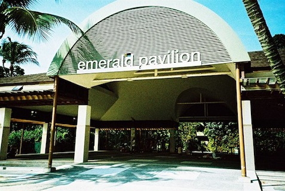
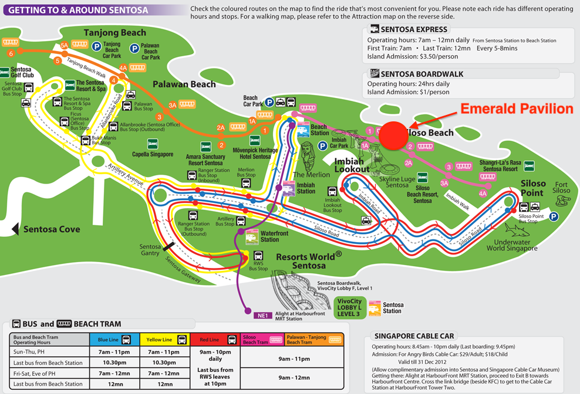

Dinner venue
The Conference Dinner will take place at Emerald Pavilion, on Siloso Beach, Sentosa.
For more information about Sentosa, go to the Official website of Sentosa
 Map of Sentosa with the South on top. Click to enlarge.{kind=link}
Important notice
Please bring the invitation letter provided in your welcome package to the conference dinner as this will allow you to forgo the entrance fee to Sentosa.
How to get there
Travel time from either the conference venue or city centre to Siloso beach is approximately 1 hour by public transport or 20 minutes by taxi. Please be at the Emerald Pavillion for dinner at 7pm.
By Foot
{kind=link}
Matthew McKague will take interested participants on a hike from the confernence venue to the dinner venue. The hike takes you over Singapore's beautiful Southern Ridges and will take 3-4 hours. Please contact Matthew for more information.
{kind=link}
Images under creative commons licenses 3.0 BY-SA (The Soon) and BY-NC-SA (N. Sivasothi)
{kind=link}
By public transportation
- Take the MRT – North East Line (purple) or Circle Line (yellow) – and alight at the Harbour Front station. The MRT station is located in the basement of Vivo City Shopping centre.
- Go to the third floor of the Shopping center and take the Sentosa Express. Alight at the Beach Station
- Walk 5-8 min to the Pavilion, or alternatively, you can also hop on to the Siloso Beach Tram from the Beach station. (The beach tram has a service of frequency 15-20 minutes, and runs until 11pm.)
Information on Singapore public transport and maps on the SMRT website.
By Taxi
A taxi from the conference location or your hotel to Sentosa costs approximately $15-$20. The driver will be able to bring you to the Beach Station, from where you will have to Walk 5-8 min to the Pavilion, or alternatively, you can also hop on to the Siloso Beach Tram from the Beach station. (The beach tram has a service of frequency 15-20 minutes, and runs until 11pm.)
How to get around Sentosa
Bus and beach tram on Sentosa are free. To go to the Emerald Pavilion, take the Red Line or Blue Line bus and alight at Siloso Point and walk to the beach and about 5min to the Pavilion. (Last bus blue line bus leaves at 10.40pm and last red line bus leaves at 9:30pm.)
View the QCrypt 2012 map directly into Google maps.